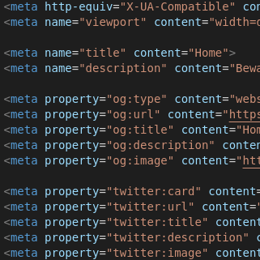
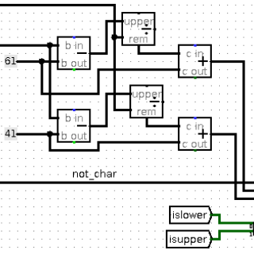
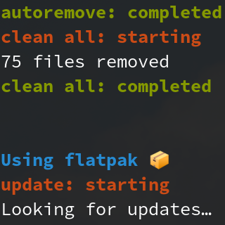
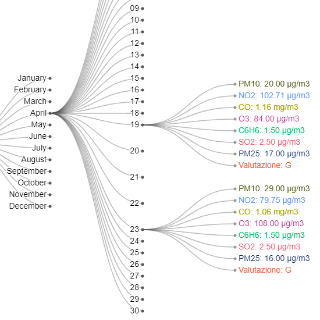

Projects

archetipico.github.io
I wanted to learn HTML/CSS/JavaScript so I decided to build my own website starting from nothing.
And yes, that's the website you're using right now!

Circuital Caesar Cipher
This is the project I realized during my Computer Architecture I university course.
It's entirely made in Logisim and it's an actual conversion of a C program into Boolean logic.

eMerger
Started as a joke among friends, now an useful toolkit for UNIX systems.
Completely made in Shell.
Once installed you only have to run up to update everything that can be updated.

Open Data Analysis
Another university project, but this time realized during my Scientific Visualization course.
In a team of 3, I developed a presentation about Milan air pollution, using only Open Data.
The whole project was created using Python, Java, PostgreSQL and D3.js.
Several Statistics notions and basic Machine Learning let us have correct deductions.
WallpaperEnhancer
Windows 10 doesn't let you change your wallpaper based on time.
This little script in Python and VBScript will do the job.
Go back to Home